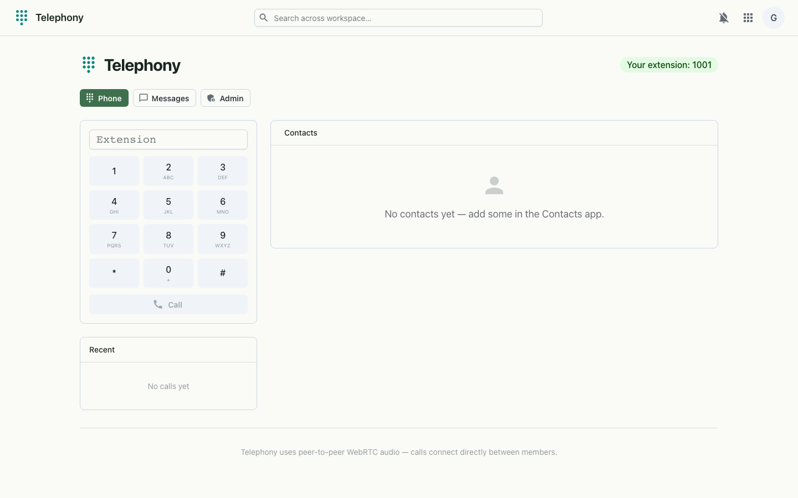

A VoIP softphone plus Google-Voice-style texting, with a 3CX-style PBX admin console for admins — call recordings and a live activity log included.
Telephony turns the browser into a phone. Place and receive calls from a dialpad, text contacts from a Google-Voice-style thread view, and — if you're an admin — run the whole phone system from a PBX administration console. Calls connect peer-to-peer over WebRTC, the directory is shared with Contacts, and console actions are captured in a searchable activity log.

A full, 3CX-style administration console — visible only to org admins — for configuring and monitoring the phone system end to end.
Calls connect peer-to-peer over WebRTC, coordinated by a websocket signaling channel that carries presence, call invites, accept/reject/hangup and the WebRTC offer/answer and ICE exchange. The softphone needs microphone access (served over HTTPS or localhost). The admin console is gated to org admins, and its actions are recorded in the activity log.